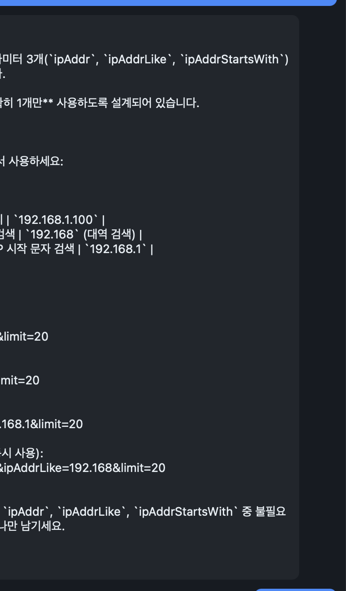

1. 소개
SwaggerMan(스웨거맨)은 OpenAPI(Swagger) 명세를 불러와 API를 한눈에 탐색하고, 실제 요청을 보내 응답을 확인하는 크로스플랫폼 데스크톱 앱입니다. macOS(Apple Silicon)와 Windows를 지원하며, Tauri 2 · React · TypeScript로 만들어진 가벼운 다크 테마 도구입니다.
이 앱의 가장 큰 차별점은 로컬에 설치된 claude CLI와 연동되는
AI 어시스턴트(✦ AI)입니다.
현재 보고 있는 엔드포인트를 컨텍스트로 한국어 대화를 나누고, 자연어로 요청 폼을
자동으로 채우거나 응답을 설명·진단받을 수 있습니다.
이런 분께 유용합니다.
- 백엔드/프론트엔드 개발자 — API 동작을 빠르게 확인하고 테스트
- QA 엔지니어 — 다양한 파라미터·상태코드 검증
- API를 처음 다루는 사람 — AI 도움으로 요청을 쉽게 구성

2. 설치
설치 파일은 GitHub Releases 페이지에서 운영체제에 맞게 내려받습니다.
macOS (Apple Silicon)
- Releases에서
.dmg파일을 내려받아 엽니다. - SwaggerMan 아이콘을 Applications 폴더로 드래그합니다.
- 응용 프로그램에서 SwaggerMan을 실행합니다.
첫 실행 시 Gatekeeper 경고가 뜨면 (“개발자를 확인할 수 없습니다”), Finder에서 SwaggerMan 아이콘을 우클릭 → 열기를 선택한 뒤 다시 열기를 누르세요. 최초 한 번만 거치면 이후엔 바로 실행됩니다.
Windows
.exe— 설치형 인스톨러. 실행 후 안내에 따라 설치합니다..msi— MSI 패키지. 그룹 정책/사내 배포 환경에 적합합니다.
설치 후 시작 메뉴에서 SwaggerMan을 실행할 수 있습니다.
3. 시작하기
SwaggerMan을 열면 화면은 크게 세 영역으로 나뉩니다.
- 상단바 — OpenAPI 스펙 URL 입력, 환경 선택, 검색
- 좌측 사이드바 — 불러온 스펙의 엔드포인트 목록
- 가운데 요청 편집기 — 선택한 엔드포인트의 요청을 구성
- 우측 패널 — Docs / Response / ✦ AI 탭
스펙 불러오기
- 상단바 입력란에 OpenAPI 스펙 URL을 입력합니다.
(예:
https://api.example.com/openapi.json) - Load 버튼을 누릅니다.
- 좌측 사이드바에 엔드포인트가 메서드별로 표시됩니다. 항목을 클릭하면 가운데에 해당 요청 편집기가 열립니다.
JSON과 YAML 형식의 OpenAPI 2.0 / 3.x 스펙을 지원합니다. 좌측 목록 상단의 검색으로 경로나 태그를 빠르게 필터링할 수 있습니다.
4. 요청 보내기
엔드포인트를 선택하면 가운데 요청 편집기에서 다음 항목을 채울 수 있습니다.
- Path 파라미터 — URL 경로의
{id}같은 자리 값 - Query 파라미터 —
?page=1&size=20같은 쿼리 - Headers — 인증 토큰 등 요청 헤더
- Body — POST/PUT 등의 요청 본문(JSON 등)
스펙에 정의된 파라미터는 자동으로 입력 칸이 만들어지고, 필수 여부와 타입 힌트가 표시됩니다. 모두 입력했으면 Send 버튼 또는 ⌘Enter로 요청을 전송합니다.
값에 {{이름}} 형태의 환경 변수를 넣으면 전송 시 현재 환경의 값으로
치환됩니다. (자세한 내용은 환경과 변수 참고)
5. 응답 보기
우측 패널의 두 탭으로 결과를 확인합니다.
Docs 탭
선택한 엔드포인트의 문서를 트리 형태로 보여줍니다. 파라미터, 요청 본문, 응답 스키마를 펼쳐 가며 각 필드의 타입·필수 여부·설명을 확인할 수 있습니다.

Response 탭
요청을 보내면 결과가 Response 탭에 나타납니다.
- 상태코드와 소요 시간 표시
- 본문 보기 모드: Pretty(정렬) / Raw(원본) / Preview(렌더링)
- 응답 본문 내 검색
- cURL · 코드 스니펫 복사 — 동일 요청을 다른 도구에서 재현
- 스키마 검증 — 응답이 스펙의 응답 스키마와 맞는지 확인

6. 환경과 변수
여러 서버를 오가며 테스트할 때 환경 기능이 유용합니다.
환경 전환
개발·스테이징·운영 등 서로 다른 baseURL을 환경으로 정의해 두고, 상단바에서 환경을 전환하면 같은 요청을 다른 서버로 손쉽게 보낼 수 있습니다.
환경 변수
자주 쓰는 값(토큰, 사용자 ID 등)을 환경 변수로 저장하고, 요청의 어느 칸에서든
{{이름}} 형태로 재사용합니다. 예를 들어 헤더에
Authorization: Bearer {{token}}처럼 넣으면 전송 시 현재 환경의
token 값으로 치환됩니다.
요청 체이닝
한 요청의 응답에서 값을 추출해 변수로 저장하고, 다음 요청에서 그 변수를 사용할 수
있습니다. 예: 로그인 응답의 accessToken을 변수로 저장 → 이후 요청
헤더에서 {{accessToken}}으로 사용. 반복 작업을 자동화할 수 있습니다.
7. ✦ AI 어시스턴트
SwaggerMan의 핵심 기능입니다. 우측 ✦ AI
탭에서, 지금 보고 있는 엔드포인트를 컨텍스트로 로컬 claude CLI와
한국어로 대화합니다. 답변은 스트리밍으로 실시간 표시되며, 대화 상단에서
모델(Sonnet / Opus / Haiku)을 선택할 수 있습니다.

자연어로 요청 폼 채우기
대화창에 /요청으로 시작하는 자연어 지시를 입력하면, AI가 현재
엔드포인트에 맞는 요청 폼(path · query · headers · body)을 제안합니다.
/요청 사용자 ID가 42인 회원 정보를 조회해줘제안된 내용은 카드로 표시되며, “폼에 적용”을 누르면 가운데 요청 편집기에 자동으로 채워집니다. 답변 아래의 ✦ 폼 채우기 버튼으로도 같은 동작을 할 수 있습니다.
AI는 요청 폼을 채워줄 뿐, 실제 전송은 사용자가 직접 ⌘Enter 또는 Send로 합니다. 의도치 않은 호출을 막기 위한 안전 장치입니다.

제안 카드 활용
- cURL 복사 — 제안된 요청을 cURL 명령으로 바로 복사
- 변수로 저장 — 제안된 값을 환경 변수로 저장해 재사용
응답 설명 · 진단
요청을 보낸 뒤에는 응답 패널에서 AI 도움을 받을 수 있습니다.
- ✦ 설명 — 응답 본문이 무엇을 의미하는지 풀어서 설명
- ✦ 진단 — 4xx·5xx 오류일 때 원인과 해결 방향을 제시
커맨드 팔레트(⌘K)에서 “AI: 응답 설명” 또는 “AI: 응답 진단”을 실행해도 동일하게 동작합니다.
대화 히스토리
대화는 프로젝트별로 자동 저장되어 앱을 재시작해도 복원됩니다. 새로 시작하려면 “새 대화”로 초기화하세요.
보안 — 비밀 값은 AI에 전달되지 않습니다.
환경 변수의 값은 AI로 전송되지 않으며, 이름만 컨텍스트로 제공됩니다. 토큰·비밀번호 같은 민감 정보가 모델에 노출되지 않도록 설계되었습니다.
사전 조건 — 로컬 claude CLI 설치가 필요합니다.
AI 기능은 사용자의 컴퓨터에 설치된 claude CLI를 호출합니다. 앱은
시스템 PATH와 함께 ~/.local/bin, /opt/homebrew/bin
같은 일반적인 위치를 자동으로 탐지합니다. CLI를 찾지 못하면 AI 패널에 설치 안내가
표시됩니다.
8. 자동 업데이트
SwaggerMan은 새 버전을 자동으로 감지합니다. 업데이트가 있으면 알림이 표시되고, 동의하면 자동으로 내려받아 설치한 뒤 재시작으로 최신 버전을 적용합니다. 수동으로 설치 파일을 다시 받을 필요가 없습니다.
9. 단축키
| 단축키 | 동작 |
|---|---|
| ⌘K | 커맨드 팔레트 열기 (AI 설명/진단 등 명령 실행) |
| ⌘Enter | 현재 요청 전송 (Send) |
| ⌘+ | 화면 확대 (줌 인) |
| ⌘- | 화면 축소 (줌 아웃) |
| ⌘0 | 줌 초기화 |
Windows에서는 ⌘ 대신 Ctrl을 사용합니다.
10. 자주 묻는 질문
✦ AI 패널이 안 보이거나 동작하지 않아요.
AI 기능은 로컬 claude CLI가 있어야 동작합니다. 다음을 확인하세요.
- 터미널에서
claude --version이 정상 실행되는지 확인 - CLI가
PATH,~/.local/bin,/opt/homebrew/bin중 한 곳에 있는지 확인 - 설치 후에도 인식되지 않으면 SwaggerMan을 재시작
CLI가 없으면 AI 패널에 설치 안내가 나타납니다.
내 토큰이나 비밀 값이 AI로 전송되나요?
아니요. 환경 변수의 값은 AI에 전달되지 않으며, 이름만 컨텍스트로 제공됩니다.
macOS에서 “개발자를 확인할 수 없습니다”라고 떠요.
Finder에서 SwaggerMan 아이콘을 우클릭 → 열기 후 다시 열기를 누르면 됩니다. 최초 한 번만 거치면 됩니다.
AI가 만든 요청이 자동으로 전송되나요?
아니요. AI는 폼을 채워줄 뿐이며, 실제 전송은 사용자가 ⌘Enter 또는 Send로 직접 합니다.
스펙을 불러올 수 없어요.
URL이 올바른 OpenAPI(JSON/YAML) 스펙을 가리키는지, 네트워크 접근이 가능한지 확인하세요. 인증이 필요한 스펙이라면 접근 가능한 경로인지 점검합니다.
대화 내용이 사라졌어요.
대화는 프로젝트별로 자동 저장·복원됩니다. “새 대화”를 눌렀거나 다른 프로젝트로 전환하면 해당 프로젝트의 히스토리가 표시됩니다.